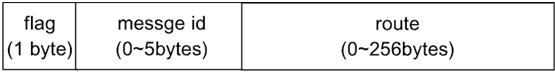

Pomelo provides two builtin connector, sioconnector and hybridconnector. Sioconnector is based socket.io, using json as its communication protocol, and hybridconnector is based on tcp/websocket, using binary stream as its communication protocol. Although socket.io does well on timeout handling and handshaking and json is flexible too, but it brings a greater amount of redundancy data as it is text protocol. Hybridconnector uses binary protocol and supports dictionary-based route compression and encoding/decoding using protobuf, it makes the message package more compact. However, the message in the application layer is still json to keep compatibility. This document will introduces the binary protocol used by hybridconnector.
Pomelo's binary protocol can be divided into two layers: package layer and message layer. Message layer works on route compression and protobuf encoding/decoding, and the result from message layer will be passed to the package layer. The package layer provides a series of mechanisms including handshake, heartbeat and byte-stream-based message encoding/decoding. The result from package layer can be transmitted on tcp or websocket. Both of the message layer and package layer can be replaced independently since neither of them relies on each other directly.
The layers of pomleo protocol is shown as below :

Pomelo Package
Package layer is used to encapsulate pomelo message for transmitting via a connection-oriented communication such as tcp. There are two kinds of package: control package and data package. The former is used to control the communication process such as handshake, heartbeat, and the latter is used to transmit data between clients and servers.
Package Format
Pomelo package is composed of two parts: header and body. The header part describes type and length of the package while body contains the binary payload which is encoded/decoded by message layer. The format is shown as follows:

- type - package type, 1 byte
- 0x01: package for handshake request from client to server and handshake response from server to client;
- 0x02: package for handshake ack from client to server
- 0x03: heartbeat package
- 0x04: data package
- 0x05: disconnect message from server
- length - length of body in byte, 3 bytes big-endian integer.
- body - binary payload.
Handshake
Handshake phase provides an opportunity to synchronize initialization data for client and server after the connection is established. The handshake data is composed of two parts: system and user. The system data is used by pomelo framework itself, while user data can be customized by developers for particular purpose.
The handshake data is encoded to utf8 json string without compression and transmitted as the body of the handshake package.
A handshake request is shown as follows:
{
"sys": {
"version": "1.1.1",
"type": "js-websocket"
},
"user": {
// Any customized request data
}
}- sys.version - client version. Each version of client SDK should be assigned a constant version, and it should be uploaded to server during the handshake phase.
- sys.type - client type, such as C, android, iOS. Server can check whether it is compatible between server and client using sys.version and sys.type.
A handshake response is shown as follows:
{
"code": 200, // response code
"sys": {
"heartbeat": 3, // heartbeat interval in second
"dict": {}, // route dictionary
"protos": {} // protobuf definition data
},
"user": {
// Any customized response data
}
}- code - response status code of handshake. 200 for ok, 500 for failure, 501 for non-compatible between server and client.
- sys.heartbeat - optional heartbeat interval in second, null for no heartbeat.
- dict - optional, route dictionary that used for route compression, null for disabling dictionary-based route compression .
- protos - optional, proto type definition if enabling protobuf encoding/decoding, null for disabling protobuf encoding/decoding.
- user - optional , user-defined data, it can be anything which could be JSONfied.
The process flow of handshake is shown as follows:

After the underlying connection is established, client sends handshake request to the server with required data. Server will check the handshake request and then respond to this handshake request. And then client sends handshake ack to server to finish handshake phase.
Heartbeat Package
A heartbeat package does not carry any data, so its length is 0 and its body is empty.
The process flow of heartbeat is shown as follows:

After handshaking phase, client will initiate the first heartbeat and then when server and client receives a heartbeat package, it will delay for a heartbeat interval before sending a heartbeat to each other back.
The heartbeat timeout is 2 times of heartbeat interval. Server will break a connection if a heartbeat timeout detected. The action of client when it detects a heartbeat timeout depends on the implementation by developers.
Data Package
Data package is used to transmit binary data between client and server. Package body is passed from the upper layer and it can be arbitrary binary data, package layer does nothing to the payload.
Disconnect Package
When server wants to break a client connection, such as kicking an online player off, it will first sends a control message and then breaks the connection. Client can use this control message to determine whether server breaks the connection.
Pomelo Message
Pomelo message layer does work on building message header. Different message types has different header, so message header format is complex for it supporting several message types.
Message header is composed of three parts: flag, message id (a.k.a requestId), route. As shown below:
As can be seen from the figure, pomelo message header is variant, depending on the particular message type and content:
- flag is required and occupies one byte, which determines type of the message and format of the message content;
- message id and the route is optional. Message id is encoded using base 128 varints, and the length of message id is between the 0~5 bytes according to its value. The length of route is between 0~255 bytes according to type and content of the message.
Flag Field
Flag occupies first byte of message header, its content is shown as follows:
Now we only use 4 bits and others are reserved, 3 bits for message type, the rest 1 bit for route compression flag:
Message type is used to identify the message type, it occupies 3 bits that it can support 8 types from 0 to 7, and now we only use 0~3 to support 4 types of message: request, notify, response, push.
The last 1 bit is used to indicate whether route compression is enabled, it will affect route field.
These two parts are independent of each other.
Message Type
Different message types is corresponding to different message header, message types is identified by 2-4 bit of flag field. The relationship between message types and message header is presented as follows:
- The figure above indicates that the bit does not affect the type of message.
Route Compression Flag
We use the last 1 bit(route compression flag) of flag field to identify if the route is compressed, where 1 means it's a compressed route and 0 for un-compressed. Route field encoding/decoding depends on this bit, the format is shown as follows:

As seen from the figure above:
- If route compression flag is 1 , route is a compressed route and it will be an uInt16 using which can obtain real route by querying the dictionary.
- If route compression flag is 0, route includes two parts, a uInt8 is used to indicate the route string length in bytes and a utf8-encoded route string whose maximum length is limited to 256 bytes.
Summary
This document describes the wire-protocol for hybridconnector provided by pomelo, including package layer and message layer. When developers uses hybridconnector as the underlying transport, they can implement client SDK for various platforms according to the protocol illustrated here.